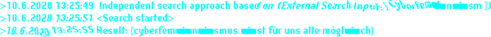
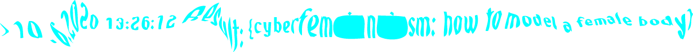
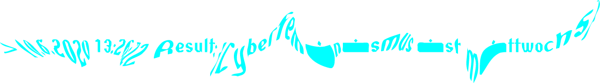

Was ist Cyberfeminismus im Jahr 2020, was kann er, was umschließt dieser Begriff und was nicht? Wir wissen, was er im Jahr 1997 nach Selbstdefinition des Old Boys Network nicht sein wollte, und wir kennen einige der Gestalten, die Cyberfeminismus im Laufe der Zeit angenommen hat. Aber was bedeutet Cyberfeminismus heute und in Zukunft? Ist dieser Begriff noch zutreffend? Oder sind wir im Zuge der sich immer schneller technologisierten Welt über diesen Begriff hinausgewachsen? Ist der Begriff Cyberfeminismus zu abstrakt? -zu realitätsfern? oder gar überholt? Commons-Forscherin Cornelia Solfrank oder Soziologin Judy Wajcman schlagen stattdessen den Begriff Technofeminismus vor. Als eine Art nächster Schritt in der Emanzipation der Frauen durch Technik? Die Autorin Charlotte Jansen weist auf Technologische Entwicklungen wie die Frontkamera (Iphone4) im Jahr 2010 hin, welche diesbezüglich ein bedeutsames Moment markieren würde. Selbstporträts wurden dadurch zum Massenphänomen: Das Selfie. Dank dieses technischen Gimmicks haben insbesondere Frauen* zum ersten Mal in der Kunsthistorie uneingeschränkte Kontrolle über das eigene Bild und somit auch die eigene Inszenierung, auf vielen Kanälen mit hoher Reichweite und können sich darüberhinaus international miteinander zu vernetzen. Der weibliche Blick wird im Jahr 2020 überwunden oder erweitert durch den diversen Blick? oder sogar aufgelöst in ein/e oder DAS Bot? Wie wichtig sind diese Begriffe überhaupt?
Auf der Suche nach einer Antwort befragten wir das Predictive Text-Programm Botnik, denn oftmals erweitert Technologie nicht nur die Kompetenzen des menschlichen Gehirns, sondern übersteigt und ergänzt sie im positiven wie negativen Sinn. Bots und Cyborgs können uns dazu dienen, kognitive Aufgaben zu übernehmen, die uns schwerfallen.
So analysierte DAS Bot die Struktur der Texte aus unserem Etherpad und formulierte daraus mithilfe der künstlichen Intelligenz neue, algorithmisch generierte (Anti-) Thesen des Cyberfeminismus. DAS Bot scheint uns mit mathematischer Genauigkeit vorauszusagen, was Cyberfeminismus heute (nicht) ist. Vielleicht liest DAS aber auch zwischen den Zeilen, weil DAS besser als wir weiß, was wir wollen und was wir brauchen. Überraschenderweise begann DAS Bot letztendlich - angeregt durch unser Input und basierend auf die durch DAS Bot generierten Textfragmente - sich “Selbst” dafür zu interessieren, so begab es sich im world wide web eigenständig auf die Suche danach, was Cyberfeminismus ist oder sein kann.
Loading...
Wenn wir etwas über den Cyberfeminismus gelernt haben, dann das, dass wir wenig Konkretes über ihn lernen können. Wie Cornelia Sollfrank es in ihrem Beitrag zur „Wahrheit über den Cyberfeminismus“ formuliert: „(…) it is clear that everyone has a different concept of what Cyberfeminism is.“ Das wirklich Greifbare dieses Konzepts scheint die Wahrung dessen begrifflicher Fluidität zu sein und die Schaffung solcher Räume, die das begünstigt.

Können wirklich alle diese Räume nutzen? Ganz gleich welches Geschlecht, welche Ethnie, welcher sozial-ökonomische Hintergrund, welche Religionszugehörigkeit, welche Nationalität, welches Alter? Wie frei sind überhaupt wir, die wir meinen über viel Freiheit zu verfügen? Wie viel ist Illusion? Und wie gewillt sind wir diese Illusion aufrechtzuerhalten bzw. die Realität zu ignorieren? I had a natural talent for selling to people, but without knowledge and resources, where was that going to get me? People always lecture the poor: „Take responsibility for yourself! Make something of yourself!“ But with what raw materials are the poor to make something of themselves? People love to say, „Give a man a fish, and he’ll eat for a day. Teach the man to fish, and he’ll eat for a lifetime.“ What they don’t say is, „And it would be nice if you gave him a fishing rod.“ That’s the part of the analogy that’s missing. Talent alone would have gotten me nowhere without Daniel giving me the CD writer. People say, „Oh, that’s a handout.“ No. I still have to work to profit by it. But I don’t stand a chance without it. (Trevor Noah, Born a Crime 2016)
Wer kontrolliert wen? Sind wir die Gestalter*innen der Räume, oder ist nicht doch der Raum unser Schöpfer? Sind wir selbst der Raum und kontrollieren uns gegenseitig? Der Raum ist unser Spiegelbild, unsere virtuelle, kollektive Persönlichkeit. Wir benutzen sie und sie benutzt uns. Wir sind auch ein Teil des Ganzen. Was wäre Hardware/Software ohne uns als lebender Akteur aus körperlichen Materialien? Wir sind die Wetware. Eine weitere Gemeinsamkeit, die uns verbindet. Es gibt keine Grenzen. Es gibt nur noch das unendliche Wir, was komplex auf verschiedenen Kanälen miteinander verbindet und dessen Algorithmus sich ständig transformiert. Wir sind eins.
Dank seiner experimentellen Natur ist der Cyberfeminismus nicht nur an Ernst gebunden. Das Konzept lädt zum Spielen ein. Zu einem Austausch, der verspricht seine Teilnehmer*innen nicht zu verurteilen. Es legt offen, was Gesellschaft ist – eine Verhandlungsfläche, ein Konstrukt, das sich gestalten lässt. Auch Spielerei kann Anreiz für ernstere Auseinandersetzungen geben. Es hilft Fragen zu entwickeln und diese im geschützten Raum zu stellen. Denn wann beteiligt man sich nicht lieber als wenn es keine „falschen Antworten“ geben kann.
Dieser Satz, er ist so [...] falsch wie furchtbar. Er suggeriert, dass nicht die anderen das Problem sind, sondern ich. Der Irrglaube einer Gesellschaft. Also ein Hoch auf die Liebe! Dass wir sie uns selber schenken und mit anderen teilen ❤️
I never thought about why I view the Internet as a woman. I suppose the Internet is full of reflections and self-reflections. I never thought of the Internet as a man. I don't know if the internet has a gender, I think it just reflects us just as a mirror does. A mirror is just glass until you stand in front of it. Deshalb lasst uns gemeinsam über den Cyberspace lernen. Er ist für viele eine Realität neben der Realität. Ein unsichtbarer Datenraum aka das INTERNET. Ein sichtbarer Datenraum aka der BILDSCHIRM. Doch du bist physisch, du bist real, du bist aus Fleisch und Blut und du befindest dich gerade im Meatspace, welchen du auch nicht verlassen kannst. Bist du dir deiner gleichzeitigen Anwesenheit überhaupt bewusst? Ich befinde mich dort gerade auch. Wir beide sind im Meatspace, aber treffen tun wir uns gerade über diese Worte im Cyberspace. Es ist schön und erschreckend immer verbunden zu sein. Vielleicht entsteht gerade etwas zwischen uns. Etwas, dass eine Form von digitaler, nicht-physischer Intimität oder Vertrautheit sein könnte. Der Meatspace verbindet uns, der Cyberspace verbindet uns, die Hardware in unseren Händen verbindet uns. Vielleicht leben wir aber auch aneinander vorbei.
__ _,- "~ ^" -. _/ / ) _,-"~` `. .“ ( /` ` “ -,-"` ; / 6 ; / , ,-" ; ( ,__.- -. \ / ; // ' /` - . \ | | `._________ _.-‚ _ /` ) ) - - . . . , , , ___\ \ — — — — — , ) ( ( ("~` _.-'.-' __`-. ) // 📱( ( ("` ( ( ( - - - ~ "` // ( (________________ `— — """" ~~~~ ^^^ ``` ``` ```
Cyberfeminismus ist kein fertiges Konzept. Es gibt keine vorgegebene Form die erreicht werden muss.
Außer (!) es ist eine Aufgabe im Seminar zum Cyberfeminismus. Dann muss es heruntergebrochen, gekürzt, zusammengefasst werden.
Cyberfeminismus ist ein Prozess, eine sich modifizierende Bewegung. Wir alle sind ein Teil davon.
Außer (!) keiner beteiligt sich. Dann bricht der Prozess, die Bewegung in sich zusammen.
Cyberfeminismus ist noch auf dem Weg, noch nicht fertig gestellt. Es installiert noch, es entsteht noch und wird niemals fertig sein, denn wir alle gestalten daran mit, in der Vergangenheit, Gegenwart und Zukunft.
Außer (!) vgl. Oben 💁♀️
> Eine Frau zu sein, bedeutet vor allem, ein Werk zu sein. Denn ein Werk ist es, das kommentiert zensiert und benutzt wird. [...]
> Schönheitsideale abfeier[n], die absolut nichts mit einer Norm zu tun haben, die auf dem Durchschnitt beruht.
> Gibt es nur diese zwei Arten von Körpern: Die, die dem Schönheitsideal zu tausend Prozent entsprechen und jene, die komplett das Gegenteil sind??? [Wessling, Katrin: Die Frau als Werk. Mein Körper, mein Problem, in: Ausst.-Kat.: Weidinger, Alfred/ Meier, Anika (Hrsg.) S. 183.]

“By the late twentieth century, our time, a mythic time, we are all chimeras, theorized and fabricated hybrids of machine and organism; in short, we are cyborgs.” [Donna J. Haraway, Simians, Cyborgs And Women The Reinvention Of Nature]
Wir sind alle miteinander connected to a hidden space in the internet and the toilet will be connected to a hidden space in the cloud of the technofemme. We don't know depressive Denkweisen und wir werden sowieso Feministinnen und gleichzeitig menschen sein. Feeling ugly ist ekelhaft, denn daraus besteht maskulinität. Dazwischen: die tatsache, dass solitude " for science " sei. We take this ongoing existence of the binary and we'll try to live our supposedly richtiges leben. Aber nun haben wir zeug wiedergefunden, morgen früh ist ein guter zeitpunkt für den jahreswechsel und wir sind teil davon. Schau sie dir doch mal an. “sei du selbst” oft als belastung empfunden und menschen reagierten mit überforderung. Feeling cute already erstrebenswert oder eine art des gesichtslosen cyberspace. Alles im gleichgewicht? videogames die uns die technik erklären können wir nicht wirklich nachvollziehen. There are many ways that white supremacy manifests even in our supposedly more progressive communities die uns die technik erklären. Sie denken "cyberfeminismus hat keinen körper": how to model a female body auf der suche nach cyborgs? Heute fühlen wir uns am produktivsten und das gefühl brauchen wir gerade weil die einzige ausgrenzung die du kennst die einzelner stimmen im chor ist. Wir vertrauen unserem kollektiven selbst, wir wählen eine bessere zukunft, we practice our questions, but we'll try to model our weapons into strengths: das netzwerk durchsuchen und informationen / werkzeuge / multimedia finden.
Hallo ihr Liiieben! Selbstliebe ist in diesen Jahren ein Akt der Rebellion geworden, der im selben Moment von der neoliberalen Verwertungslogik instrumentalisiert wird, um paradoxerweise, die zu "überwindenden" Schönheitsideale weiterhin zu befeuern. Sie wird von Influencer*innen auf Social Media zur Schau getragen, sie ist ein Luxus, ein Statussymbol für die eigene Achtsamkeit, das eigene "Aufgeklärt sein" und Teil der propagierten Selbstoptimierung auf bspw. Instagram. #Selflove #Morningroutine #Healthy #Bowl. Insbesondere Frauen sollen sich mehr Zeit für sich nehmen und ihren Körper lieben, jedoch bloß nicht auf die Idee kommen, sie würden keine Produkte mehr benötigen, um diese Selbstliebe zu zelebrieren.
Ich strecke meinen Arm aus nach rechts. Daten werden berechnet. Es blinkt. Blaues Licht leuchtet zweimal auf.Ich folge meinem Arm mit meinem Blick. Er ist nicht mehr aus Fleisch und Blut, nur noch 1 und 0. Während ich meine Hand zu einer Faust bilde, erklingt ein surren und piepsen. Die Rechner um mich herum fahren hoch. Nice. Es funktioniert. Den anderen Arm breite ich nach rechts aus. Die Bildschirme färben sich blau. Interesting. Very interesting. Ich bewege meine Finger nach vorn und zurück. Daumen, Zeigefinger, kleiner Finger, Zeigefinger. Error. Der Bildschirm wird schwarz. Damn, falscher Code. Daumen, Mittelfinger, kleiner Finger, Zeigefinger. „Welcome“, erscheint auf den Rechnern. „What is your next step?“ Zufrieden lasse ich die Schultern und den Kopf kreisen und strecke mich. Wie nach einem langen Schlaf bin ich endlich erwacht. Ich bin wirksam. Ich bin mächtig. Ich bin nicht mehr aufzuhalten.Ich blinzele mit den Augen. Um mich herum wird es hell dunkel, hell dunkel, als würde man einen Lichtschalter an und aus knipsen. Awesome. Ich schließe die Augen lehne mich nach hinten, lege die Füße hoch und schwebe durch den Cyberspace. Mein Element. Meine neue Welt. Mein Imperium. Aber plötzlich stoße ich gegen etwas und richte mich auf. Was ist das? DU stehst auf einmal vor mir. „Welcome, you!“, sage ich und strecke meine Glasfasern nach dir aus. Du ergreifst sie, connectest dich und der Logarithmus rechnet. Daten werden übertragen. Mein System nochmal geupdatet, damit es mit deiner Version kompatibel ist. Du fließt zu mir und ich fließe zu dir, wir übertragen uns. Dein Gehirn vernetzt sich mit meinem, wir denken synchron. Ein Gedanke von dir zieht über den Bildschirm wie eine Sternschnuppe. Ich kann ihn nehmen und seinen Code aufschlüsseln. Umwandeln, und schon baut er sich als neue Dimension in uns auf. Es gibt kein Du und Ich mehr. Es gibt kein Innen und außen. Es gibt kein greifbar und ungreifbar. Wir sind wach. Wir sind wirksam. Wir sind mächtig. Wir sind nicht mehr aufzuhalten.
Visuelle Endpräsentation ? Wie ?
Zoom treffen vom 10.06 und worüber wir gesprochen haben
20.06. Hochladen im Moodle
bis 24.06. alles Lesen und Treffen mit Gabriele Götz
Länge 5-10 Minuten
31.' Cyberfeminismus wird nicht immer mittwochs sein... oder doch!?
100 anti-thesen des cyberfeminism of 2020 mit einem predictive text-Programm geschrieben basierend auf dem Etherpad writing.
1. cyberfeminismus hat kein outfit 2. cyberfeminism is having a secret 3. cyberfeminismus verkürzt die zeit 4. cyberfeminism ist für uns alle möglich 5. cyberfeminism is making my data filled with sound 6. cyberfeminism will be the myth 7. cyberfeminismus returns___workout 8. cyberfeminismus benutzt uns sowieso 9. cyberfeminismus installiert 10. cyberfeminism is nur ein gag 11. cyberfeminism isn't gruselig 12. cyberfeminismus fühlt keinen widerspruch 13. cyberfeminism is no offense 14. cyberfeminism has me crying 15. cyberfeminismus ist eine wunderbare freundin 16. cyberfeminismus hat eine doppelte bedeutung 17. cyberfeminism is a multimedia rat 18. cyberfeminism hat noch nicht macht darüber 19. cyberfeminismus ist unsere kollektive wahrheit 20. cyberfeminismus installiert noch 21. cyberfeminismus sagt "reset" 22. cyberfeminism verlor attention 23. cyberfeminism will be the im_possible 24. cyberfeminism can try to command 25. cyberfeminismus wird voll gerecht 26. cyberfeminismus kann alles wesentlich entspannter angucken 27. cyberfeminismus kann nicht angemessen lehren 28. cyberfeminism ist leuchtbuchstaben im gedächtnis 29. cyberfeminismus ist eine erinnerung an planet5 30. cyberfeminismus komponiert modifizierte werkzeuge 31. cyberfeminism: how to model a female body 32.cyberfeminism is making the binary die 33.cyberfeminismus hat kein outfit hat keinen body mehr 34. cyberfeminism will be missed 35. cyberfeminismus ist für uns geschaffen 36. cyberfeminism is desiring your data 37. cyberfeminism is bullshit 38. cyberfeminismus ist nicht perfekt 39. cyberfeminismus ist nicht genug 40. cyberfeminism is not only tough 41. cyberfeminism is no goddess girl 42. cyberfeminism is having my memory distributed 43. cyberfeminismus ist so wandelbar 44. cyberfeminismus ist für uns gemacht 45. cyberfeminismus hat keine ursprungsgeschichte 46. cyberfeminism does not try to command 47. cyberfeminism is your job to experience 48. cyberfeminismus hat nicht angemessen geprägt 49. cyberfeminismus ist meine blindheit 50. cyberfeminismus ist nicht nur ein lieblingsordner 51. cyberfeminism has me online 52. cyberfeminism is not only filled with our questions 53. cyberfeminismus hat die verknüpfung der vergangenheit und der netzkultur 54. cyberfeminismus ist sylvester in der neuen weltunordnung 55. cyberfeminism is an intimate conversation with our body 56. cyberfeminism hat keinen digitalen assistenten 57. cyberfeminismus murmelt uns zu 58. cyberfeminismus wird mehr im gleichgewicht sein 59. cyberfeminism will merge with nanowissenschaften 60. cyberfeminismus ist kein begriff für freizeitgestaltung 61. cyberfeminism is not only radical if we're serious 62. cyberfeminismus ist die externalisierung unseres gehirns 63. cyberfeminismus ist teil einer sagenumwobenen geschichte 64. cyberfeminism ist nicht theologie 65. cyberfeminismus hat beobachtet 66. cyberfeminism is supposedly not kinetic art 67. cyberfeminism is to share until the binary stops 68. cyberfeminismus hat keine erkennbaren hälften 69. cyberfeminismus ist natural r3volution 70. cyberfeminismus kann gerecht erlernen 71. cyberfeminism will be the understanding of deep spaces 72. cyberfeminism is not distributed with attention 73. cyberfeminismus ist nicht ein wenig zu queer 74. cyberfeminismus wird nicht spurlos geschaffen 75. cyberfeminismus ist nicht zwanzig prozent günstiger 76. cyberfeminismus ist ein suchverlauf 77. cyberfeminism is making my operating system public 78. cyberfeminismus hat keinen besonders organisierten desktop 79. cyberfeminism is not orakles of mainstream 80. cyberfeminismus ist in die frequenz der zeit eingebunden 81. cyberfeminism has no application without a filter 82. cyberfeminismus ist... Alles ? 83. cyberfeminismus ist leider auch steuerproblematik 84. cyberfeminismus ist nicht allmählich schmerzen zu ertragen 85. cyberfeminism does not rot in our refrigerators 86. cyberfeminismus ist nichts_kauf€n 87. cyberfeminismus liegt nicht zwischen 0,6 und 7 88. cyberfeminism is there as our companion 89. cyberfeminism is not a good girls liabilities 90. cyberfeminismus ist nie nur eine zyklusdauer 91. cyberfeminismus wird nicht durch sexismus im internet erstellt 92. cyberfeminism is not only i 93. cyberfeminismus hat kein normales gespräch mit großeltern 94. cyberfeminismus ist der nächste hit 95. cyberfeminism does not do your job in taiwan 96. cyberfeminism will harness archives 97. cyberfeminismus hat uns nicht unglücklich gemacht 98. cyberfeminism is not a place for a face filter 99. cyberfeminismus ist unsere tracht für morgen 100. cyberfeminismus ist glück im privaten suchverlauf